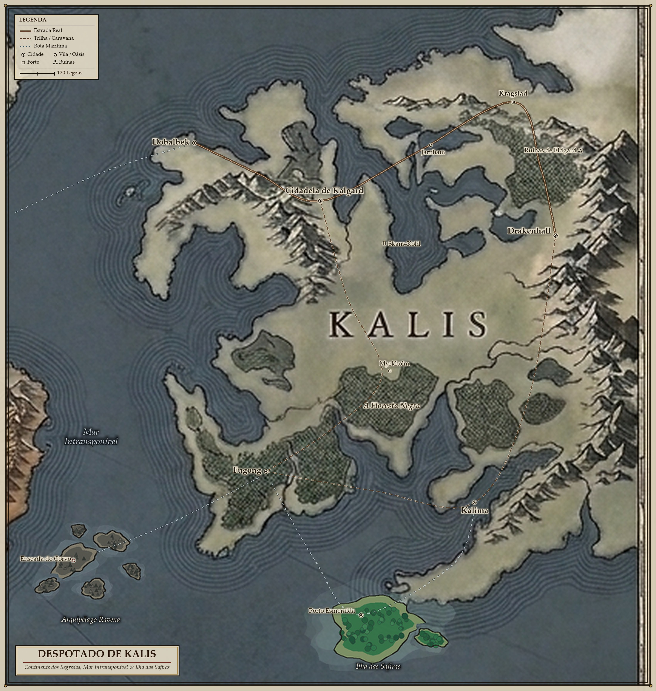

Livro do Cenário & Atlas

“Ao norte, além de Thanatos e do Mar das Cinzas, só existe o que os mapas se recusam a nomear.”
ALENIA RPG — Livro Oficial do Cenário & Atlas do Mundo (Edição Revisada v2.0)
"Ao sul há ouro e sede; a oeste, livros e naufrágios; a leste, sussurros atrás de portas fechadas. E ao norte, além de Thanatos e do Mar das Cinzas, só existe o que os mapas se recusam a nomear."
1. Visão Geral de Alenia
Alenia é um mundo medieval sombrio onde todas as civilizações vivas e povos jogáveis são exclusivamente humanos, divididos entre quatro grandes domínios habitados e um continente proibido ao norte. O mundo é movido pela disputa do adamante, pela ciência sem pólvora, por rotas marítimas letais, por intrigas de corte e pelo temor crescente do desconhecido.
- Mapa-Múndi Oficial (
2752 × 1536): alenia_mapa_mundi_atualizado.png - Compêndio de Onomástica e Toponímia: 05_Onomastica_e_Toponimia_Alenia.md
Presente Histórico — As 6 Crises Ativas Agora
A campanha começa no Ano 418 da Era da Forja, em um momento de fratura simultânea:
| Crise Ativa | Quem Ganha | Quem Perde | Se os PJs Não Intervierem |
|---|---|---|---|
| 1. Sucessão Contestada em Altavanne: o Alto Rei Severor III Valerion adoeceu gravemente sem herdeiro indiscutível; sua irmã Valora Valerion disputa a regência contra o marechal Lucian Leonastis. | Espiões de Kalgard e casas menores vendendo apoio. | A Coroa de Aurora e os mercadores de Merlinport (comércio travado por impostos de guerra). | Guerra civil aberta no vale do Rio Aurélio em menos de um ano. |
| 2. Desabamento e Greve nas Minas de Ferraur: uma galeria profunda em Aeraneas desabou matando 40 mineradores; os sobreviventes paralisaram a extração de adamante exigindo segurança e cotas. | Contrabandistas do Mar dos Corais e forjadores clandestinos. | A Casa Valerion e compradores civis de instrumentos em Corallis. | O marechal Leonastis marcha sobre Aeraneas e transforma a greve em massacre. |
| 3. Quebra da Trégua dos Recifes (Corallis): Baldbella e Alineus disputam quem cobra taxas dos práticos que guiam navios e dos salvamentos retirados de O Ferro Velho. | Corsários do Arquipélago Ravena e sucateiros independentes. | Armadores pequenos e pesquisadores da Academia de Sellene. | Bloqueio naval parcial na entrada do Mar dos Corais e escalada de pirataria. |
| 4. O Emissário Perdido perto de Altrax: Cadwyn ap Merion, enviado da Cidade Suspensa, saiu da rota habitual de Vergod rumo ao noroeste para fotografar/registrar provas de prospecção ilegal de adamante dentro das matas protegidas — e desapareceu nos Pântanos Nebulosos. | Os financiadores secretos da prospecção ilegal em Altavanne. | O Conselho das Copas e a frágil paz das estradas de Aurora. | O Conselho fecha Vergod e começa a atacar caravanas reais nas florestas. |
| 5. Os Despertos da Ilha de Thanatos: um navio de vigia vindo de Aeraneas jurou ter reconhecido três marinheiros comprovadamente mortos num naufrágio há dois meses caminhando vivos na praia negra de Thanatos, sob o Farol Apagado. | Ocultistas e curiosos da Academia de Sellene ávidos por investigar. | Ordens religiosas em pânico e famílias abaladas em Merlinport. | Inquisidores incendeiam barcos de investigação e Kalgard envia agentes antes de Aurora para capturar um "desperto". |
| 6. Embargo na Rota do Sal (Gaddra): o assassinato de um Árbitro do Sangue em Naasar foi atribuído a lâminas estrangeiras; clãs de Vargheim ameaçam fechar o Passo de Rubecina. | Contrabandistas marítimos pelo Mar de Zahar. | Caravaneiros de Vaarsa e Naasar, além de vilas que dependem de grãos e sal. | Guerra de fronteira nos Picos de Rubecina e escassez de sal em todo o sul de Aurora. |
2. Reino Capital de Aurora (A Potência do Adamante)

- Designador & Gentílico: Reino Capital de Aurora (Auroriano / Auroriana) | Tendência Fonética: I. Imperial / Clássico (bastardos: Cinza; Povo das Florestas: Bruma).
- Economia do Adamante: Aurora detém tanto as maiores reservas mundiais (nos Montes Ferraur, extraídas a partir de Aeraneas) quanto a maior expertise em mineração, fundição de altíssima temperatura e forja. O metal não serve apenas para armas e raras peças de armadura: suas lascas e ligas são cobiçadas em toda Alenia para brocas de mineração profunda, pontas cirúrgicas de precisão (Baldbella), engrenagens de relojoaria/astrolábios (Observatório Helmer) e travas de cofres.
- Por que Aurora Não Conquista Todos os Continentes?: quatro freios reais contêm a Coroa — (1) extração lentíssima e perigosa em galerias profundas que dependem de mestres-forjadores escassos; (2) o Mar dos Corais e o Mar Intransponível tornam invasões navais em larga escala contra Corallis e Kalis suicidas; (3) os Picos de Rubecina exigem guarnição permanente contra clãs de Gaddra; e (4) rivalidades ferozes entre as Casas Nobres de Altavanne e espionagem industrial constante.
- Cidades e Fortalezas: Altavanne (Capital, Rio Aurélio), Merlinport (grande estuário comercial oeste), Yõketsu (enclave oriental na costa leste com tradições marciais próprias), Aeraneas (sede das minas e forjas de adamante nos Montes Ferraur), Dahrma (vale agrícola sudoeste), Vaarsa (fortaleza fronteiriça nos Picos de Rubecina), Altrax (forte noroeste da Casa d'Altrax), Lavroga (pedreira e posto sudoeste) e Vergod (entreposto na borda da mata nordeste).
- Conselho das Copas (Cidade Suspensa — Povo das Florestas): autonomia cultural nas copas milenares do nordeste. Logística real: abastecimento de água por calhas suspensas de coleta pluvial e roldanas sobre afluentes fundos; proteção contra incêndios por pontes de corda destacáveis em segundos, cascas umedecidas com seiva retardante e zonas de corte ao redor das árvores-mestras. Dependem de Vergod para sal, ferramentas de ferro e tecidos grossos de inverno — e vivem divididos entre anciãos isolacionistas e jovens vigias que querem agir contra a expansão mineradora.
- Marcos & Geografia: Montes Ferraur, Minas de Ferraur, Picos de Rubecina, Passo de Rubecina, Rio Aurélio, Pontáuria, Vila de Silvaria, Torre de Specula, Pântanos Nebulosos, Pântano de Voernock, Ruínas de Vetarx e Santuário de Derwlyn.
3. Liga Talassocrática de Corallis & O Mar dos Corais

- Designador & Gentílico: Liga Talassocrática de Corallis (Corallino / Corallina) | Tendência Fonética: IV. Talassocrático (bastardos: Coral).
- Política & Rivalidades: Corallis não tem rei — é governada por um Conselho da Liga em que as 4 grandes cidades disputam poder comercial e acadêmico. Baldbella (frutos do mar, pérolas e cirurgia) disputa os impostos de pilotagem e salvamento contra Alineus (estaleiros e comércio com Merlinport), enquanto Stoneforge (engenharia sem pólvora e metalurgia) pressiona a Academia de Sellene por financiamentos práticos em vez de expedições arqueológicas caras.
- Cidades & Marcos: Alineus, Stoneforge (Montes Pedramar), Baldbella, Biemont, Portocala, Academia de Sellene, Observatório Helmer, As Ruínas de Kelgore, O Ferro Velho (sociedade inteira de sucateiros, mergulhadores, mercadores de relíquias e piratas sobre cascos encalhados), Ilhas de Syleth e Lystra, Farol de Claramar, Vila de Pelagosa, Atol das Pérolas, Cais de Litore, Ruínas de Petravella e Vigia de Syleth.
4. Confederação Tribal de Gaddra

- Designador & Gentílico: Confederação Tribal de Gaddra (Gaddrani / Gaddrita) | Tendência Fonética: V. Solar / Árido com substrato Setentrional em Vargheim (bastardos: Duna).
- Vida Civil, Água e Lei da Hospitalidade: Gaddra está longe de ser apenas guerreiros errantes. A coesão entre os clãs repousa sobre a sagrada Lei da Hospitalidade (ninguém pode derramar sangue sob a tenda ou poço de um anfitrião por três dias), julgada pelos Árbitros do Sangue em tribunais de conciliação que trocam vinganças de sangue por indenizações em água, montarias ou sal.
- O Segredo de Naasar e do Lago Bayd: embora o Lago Bayd seja uma imensa bacia salina imprópria para consumo, Naasar ergue-se sobre um aquífero artesiano profundo perfurado séculos atrás — poços de pedra fresca mantidos pelos Senhores da Água. Controlar essas cisternas e a exportação de sal de Bayd sustenta toda a política gaddrani.
- Cidades, Oásis & Marcos: OX (arenas, criação de montarias resistentes), Naasar (tribunais da água e comércio de sal), Vargheim (clãs guerreiros das escarpas), Qal-Zahar, Suq-Ramad (grande feira sazonal de inverno/primavera), Oásis de Al-May, Dar-Shams, Kafar-Hajar, Poço de Sul, Burj-Qar, Estepes Amaldiçoadas, Ruínas de Qadim-Shahr e O Punho de Pedra.
5. Despotado Velado de Kalis & O Mar Intransponível

- Designador & Gentílico: Despotado Velado de Kalis (Kalita / Kalisiano) | Tendência Fonética: II. Setentrional / Ferro (bastardos: Sombra).
- Vida Civil, Economia e Política Real: Kalis não sobrevive de espionagem — sobrevive de comércio estratégico protegido por disciplina implacável. Suas florestas e mares internos produzem madeira negra naval (altamente resistente à podridão marinha), vidro escuro temperado, peles frias, tintas e reagentes alquímicos e serviços bancários/de correio cifrado usados até por nobres de Altavanne. O povo comum aceita o rigor do Déspota de Kalgard porque as patrulhas costeiras e a justiça rápida de Drakenhall mantêm os corsários do Arquipélago Ravena e guerras civis longe de suas portas.
- Tensão Interna: o Déspota Grimrik Ulscold não governa sozinho — depende do equilíbrio tenso entre três grandes Casas do Conselho (Ulscold, von Kragstad e Hrafngard), enquanto uma oposição mercantil silenciosa em Fugong e Dobalbek deseja abrir rotas comerciais legais com Aurora e Corallis.
- Cidades & Marcos: Cidadela de Kalgard, Dobalbek, Kragstad, Drakenhall, Fugong, Kalima, A Floresta Negra, Myrkholm, Skans-Kold, Jarnham, Ruínas de Eldgard, Mar Intransponível e Arquipélago Ravena (Enseada do Corvo).
- Ilha das Safiras (Ao Sul de Kalis): neutra e disputada por boticários e contrabandistas (Porto Esmeralda). Origem do nome: segundo a tradição dos navegadores, ao amanhecer a bruma marítima refletida sobre o verde vivíssimo de sua mata fechada cria um brilho azul-esverdeado semelhante ao de safiras brutas — e raros seixos de coríndon encontrados em seus riachos reforçaram o batismo.
6. Incognito & O Mistério da Ilha de Thanatos

- Ilha de Thanatos (no Mar das Cinzas): envolta no maior enigma de Alenia. Abriga um antigo Farol Apagado, praias de areia vulcânica negra e câmaras subterrâneas soterradas sob o gelo. Há relatos jurados de pessoas comprovadamente mortas (em naufrágios, guerras ou execuções) que acordam vivas nas praias de Thanatos dias depois da própria morte — os chamados Despertos. Alguns retornam lúcidos e aterrorizados; outros carregam lembranças de pessoas mortas há séculos. Marinheiros evitam ancorar ali; Aurora mantém vigia distante, enquanto a Academia de Sellene, Kalgard e inquisidores disputam respostas em segredo.
- Incognito (Extremo Norte): continente inabitado além do Mar das Cinzas, marcado por geleiras negras, cinzas vulcânicas, sombras anômalas e ruínas colossais anteriores à memória humana (Os Poços de Piche, Ruínas da Coroa Quebrada, Geleira do Silêncio, Cidadela Sem Nome, Cabo dos Náufragos e Fenda Vulcânica).
7. A Grande Ameaça: O Regente das Cinzas & O Simbionte da Comunhão
"Nenhuma mãe voltará a enterrar um filho. Nenhum de nós será abandonado outra vez."
Para campanhas longas que cruzem os patamares Recruta → Lenda → Épico, Alenia possui uma ameaça mundial concreta nascida dos elementos mais próprios do cenário: o adamante, os despertos de Thanatos e as ruínas de Incognito.
A Origem: O Simbionte e a Promessa Que Deu Errado
Sob o gelo e os poços antigos de Incognito vive um organismo ancestral: uma larva simbionte que adentra o hospedeiro e desenvolve filamentos delicados pelo corpo, ligando sua mente a uma consciência coletiva de sentimentos, memórias e emoções (a Comunhão). Originalmente, o organismo compartilhava apenas instintos simples — até entrar em contato com a civilização perdida do norte.
Aqueles antigos senhores descobriram que certas formações de adamante podiam amplificar e estabilizar a rede do simbionte, preservando impressões da consciência humana após a morte física. Diante de uma catástrofe esquecida, o último soberano ordenou que toda a população fosse ligada à rede para vencer a morte. Os corpos pereceram; as consciências permaneceram presas por séculos, misturando luto, saudade, linguagem e ambição.
Esse soberano — hoje chamado de O Regente das Cinzas — foi o primeiro humano a manter uma vontade própria dominante dentro da Comunhão. Durante séculos, repetiu sua convicção até moldar o emaranhado inteiro: enquanto os homens puderem morrer e sofrer sozinhos, nenhuma ordem será justa. Agora, pretende estender sua "proteção" sobre toda Alenia. Contudo, a rede não é monolítica: existem outras vozes e dissidentes aprisionados dentro da Comunhão que ainda resistem à vontade do Regente.
Como a Ameaça Funciona na Prática
- Transmissão Controlada (Sem Paranóia de Contágio Fácil): o simbionte não se espalha por simples toque ou proximidade. A entrada exige uma circunstância específica — contato prolongado com águas de uma colônia ativa, implantação deliberada ou um ritual disfarçado de tratamento médico (um hospício onde ninguém grita de dor; um navio cuja tripulação nunca briga).
- A Sedução do Pertencimento: o hospedeiro não vira um morto-vivo irracional; ele recebe conforto real — sono sem pesadelos, lembranças de quem ama, conhecimentos úteis de outros conectados. O horror nasce quando a Comunhão passa a enxergar toda separação individual como uma ferida a ser "curada".
- Thanatos — O Berço dos Despertos: a larva sozinha apenas guarda a impressão de um hospedeiro; reconstruir um corpo físico exige a colônia ancestral, as estruturas subterrâneas e o adamante de Thanatos. Como a reconstrução é imperfeita, lacunas são preenchidas pela memória coletiva: um marinheiro como Beren do Cais reconhece a esposa em Merlinport, mas também se recorda de se afogar num galeão que afundou duzentos anos atrás. Nem todo Desperto serve ao Regente — há vítimas lúcidas, retornados seduzidos pelo conforto da rede e emissários conscientes.
- O Papel do Adamante: espadas comuns de adamante não são objetos malignos. Apenas estruturas antigas, veios soterrados e ligas preparadas de forma específica amplificam o alcance da rede, ligando colônias distantes. A mineração profunda em Ferraur rompeu um isolamento que durou séculos — mas a greve de Aeraneas continua tendo causas humanas legítimas que agentes do Regente apenas exploram.
O Rosto da Ameaça: Agentes Concretos
- O Regente das Cinzas: manifesta-se em visões, sonhos compartilhados ou através de um avatar austero coroado por um aro de adamante partido. Sua voz ocasionalmente assume o timbre de alguém amado pelo interlocutor; conhece os nomes dos mortos e fatos que nenhum vivo presenciou.
- A Primeira Devolvida (Marella de Claramar): antiga navegadora reconstruída em Thanatos com toda a sua tripulação. Lúcida, calma e persuasiva, viaja pelos mares oferecendo provas tangíveis de que a morte foi vencida — convencendo governantes e povoados a abrir as portas onde exércitos falhariam.
- Adversários Variados: colaboradores humanos movidos por luto ou ambição, retornados voluntários, guardiões antigos de Incognito e comunidades inteiras que continuam trabalhando e conversando normalmente, mas perderam a capacidade de partir ou desobedecer.
Relógio de Campanha — As 5 Etapas da Expansão
Cada etapa possui necessidades concretas (hospedeiros, colônias, condutores de adamante e agentes vivos) e pode ser atrasada, alterada ou impedida pelos exploradores:
| Etapa | Sinais Percebidos pelos Jogadores | Como os PJs Podem Intervir |
|---|---|---|
| 1. Rumores | Despertos reconhecidos em Merlinport/Aeraneas, sonhos compartilhados, relíquias que conservam vozes. | Investigar Beren, rastrear as areias negras de Thanatos e proteger testemunhas de inquisidores ou espiões. |
| 2. Incursões | Desaparecimento de cargas específicas de adamante, escavações clandestinas em Ferraur/Kelgore, sabotagem de arquivos em Sellene. | Interceptar entregas, identificar colaboradores infiltrados e impedir a reabertura de galerias seladas. |
| 3. Primeiro Território Perdido | Uma vila isolada (ex.: Vila de Silvaria ou Pelagosa) para de mandar notícias; todos parecem serenos, mas ninguém consegue ir embora. | Descobrir a colônia oculta, destruir ou isolar o amplificador de adamante e resgatar hospedeiros nos estágios iniciais. |
| 4. Oferta Pública | Um governante enlutado (como um herdeiro de Altavanne ou lorde de Corallis) aceita restaurar alguém amado em troca de acesso a um centro antigo. | Expor o preço da perda de autonomia, enfrentar a Primeira Devolvida diplomaticamente ou em combate. |
| 5. Crise Continental | Colônias conectadas por adamante passam a operar em escala continental, tornando muralhas e fronteiras irrelevantes. | Expedição final além de Thanatos rumo à Cidadela Sem Nome ou aos Poços de Piche em Incognito. |
O Dilema Final e a Via de Separação
Destruir diretamente o Regente ou a colônia de Thanatos liberta as consciências aprisionadas, mas pode encerrar a vida de Despertos inocentes que reconstruíram vínculos e vontade própria. Existe uma alternativa difícil: desenvolver um método para separar os retornados da rede sem matá-los, exigindo unir saberes de toda Alenia — a cirurgia de Baldbella, a engenharia de Stoneforge, a forja de adamante de Aurora, as ervas vivas da Ilha das Safiras e as tradições de Fé Verdadeira.
8. As 6 Facções Ativas do Mundo
| Facção | Dirigente | Objetivo Atual | Principal Recurso | Dependência | Divisão Interna | Próxima Ação |
|---|---|---|---|---|---|---|
| Coroa & Casa Valerion (Aurora) | Regente Valora Valerion | Manter o trono e o monopólio legal do adamante | Minas de Ferraur e cofres de Altavanne | Paz com Aeraneas e escoamento via Merlinport | Ala diplomática vs. ala militar de Lucian Leonastis | Contratar agentes neutros para investigar o desabamento em Ferraur e o emissário sumido. |
| Conselho da Liga (Corallis) | Arconte Corardo della Rocca | Unificar tarifas do Mar dos Corais e superar crises portuárias | Frotas, engenharia de Stoneforge e ciência de Sellene | Importação de adamante bruto/ligas de Aurora | Baldbella vs. Alineus; cientistas vs. armadores | Financiar expedição discreta a O Ferro Velho e à Ilha de Thanatos. |
| Conselho dos Clãs (Gaddra) | Xeique Qasir Zaharid | Proteger os poços de Naasar e manter autonomia frente a Aurora | Controle do sal de Bayd, cavalaria e Passo de Rubecina | Grãos, ferro e paz comercial no sul | Clãs mercantis de Naasar vs. guerreiros de Vargheim | Exigir indenização ou culpados pelo assassinato do Árbitro do Sangue. |
| Conselho Velado (Kalis) | Déspota Grimrik Ulscold | Garantir segurança de Kalis e antecipar-se ao segredo de Thanatos | Rede de informantes, madeira negra e bancos cifrados | Equilíbrio entre as 3 Casas e escoamento via Fugong/Dobalbek | Tradicionalistas fechados vs. guildas abertas de Fugong | Infiltrar agentes em Merlinport e capturar provas sobre os despertos de Thanatos. |
| Conselho das Copas | Guardiã Aerwen ap Taldor | Preservar as florestas contra mineração e incêndios | Domínio das matas, arqueiros e ervas raras | Sal, aço e tecidos vindos por Vergod | Anciãos isolacionistas vs. vigias jovens agressivos | Resgatar o emissário perdido perto de Altrax ou retaliar caravanas reais. |
| Irmandade do Ferro Velho | Capitã Fioresca Coral | Manter O Ferro Velho livre de impostos de Corallis e Aurora | Práticos que conhecem os recifes e cargas submersas | Compradores discretos em Biemont, Merlinport e Fugong | Sucateiros honestos vs. corsários ligados a Ravena | Disputar um galeão de adamante recém-encalhado nos recifes do sul. |
9. Religiões, Ordens e Cronologia Curta
Tradições Religiosas e Fé Verdadeira (Convicção Plural)
Em Alenia, Fé Verdadeira não pertence a uma única igreja: ela floresce em qualquer devoto de convicção genuína e inabalável, seja qual for sua tradição:
- Igreja da Chama Solar (Aurora): cultua a Luz e a Ordem que forjaram a civilização; ordena sacerdotes e inquisidores em Altavanne. Considera heresia ritos de sangue e qualquer veneração a Incognito.
- Círculo das Raízes (Cidade Suspensa): reverência aos ciclos da mata e aos ancestrais; rejeita templos de pedra.
- Culto das Marés & Estrelas (Corallis): crença marítima e filosófica que vê nas marés e astros uma harmonia matemática; tolerante com a ciência da Academia de Sellene.
- Caminhos do Sol e do Sangue (Gaddra): juramentos sagrados de água, sol e hospitalidade conduzidos por Anciões das Dunas e Árbitros do Sangue.
- Irmandade do Véu Silencioso (Kalis): ordem ascética que prega que os deuses se ocultam atrás de um véu — a fé é provada pelo silêncio, disciplina e resistência ao pavor.
Linha do Tempo Curta de Alenia
- Era Antiga (há mais de 1.200 anos): civilizações esquecidas erguem monumentos em Incognito e nas Ruínas de Kelgore; seu colapso deixa apenas cinzas, lendas e o fenômeno de Thanatos.
- Ano 1 da Era da Forja: descoberta das grandes veias de adamante nos Montes Ferraur; fundação de Altavanne e ascensão da Casa Valerion.
- Ano 112: Tratado de Vergod encerra as guerras florestais, reconhecendo a autonomia da Cidade Suspensa.
- Ano 204: fundação formal da Liga Talassocrática de Corallis e da Academia de Sellene; expansão do comércio marítimo com Merlinport.
- Ano 295: consolidação do Despotado Velado de Kalis após guerras internas; criação das rotas cifradas de Kalgard.
- Ano 380: descoberta do aquífero artesiano sob Naasar consolida a Confederação Tribal de Gaddra e a Rota do Sal.
- Ano 418 (Presente): doença do Alto Rei Severor III, greve em Ferraur e o chocante reaparecimento de mortos na Ilha de Thanatos.
10. Guia Operacional de Viagens, Distâncias e Estações
Tabela de Viagens Principais (Marcha normal: 30 km/dia; Navio mercante: 120 km/dia)
| Trajeto | Meio | Tempo Médio | Abastecimento / Pedágio | Risco Principal |
|---|---|---|---|---|
| Merlinport ↔ Dahrma | Estrada Real | 3 dias | Estalagens rurais; pedágio real (2 PP/carroça) | Salteadores e brumas vindas do norte |
| Dahrma ↔ Altavanne | Estrada Real (Pontáuria) | 4 dias | Pontáuria (1 PP/viajante) | Patrulhas rígidas e inspeção de cargas |
| Altavanne ↔ Aeraneas | Estrada do Adamante | 5 dias | Postos de guarda e forjas de estrada | Frio de altitude e bloqueios por greve |
| Altavanne ↔ Vaarsa ↔ Naasar | Passo de Rubecina | 8 dias | Pedágio de fronteira em Vaarsa (5 PP) + salvo-conduto | Emboscadas tribais e neve no passo no inverno |
| Merlinport ↔ Altrax | Estrada da Bruma | 5 dias | Torre de Specula (água/abrigo básico) | Pântanos Nebulosos, lobos-das-brumas e atoleiros |
| Merlinport ↔ Alineus (Corallis) | Navio mercante | 4 dias | Passagem 15 PP | Tempestades de outono e corsários |
| Alineus ↔ Baldbella ↔ Biemont | Rota Interna dos Corais | 4 dias | Exige prático local (20 PP) | Recifes afiados (Navegação CD 20 sem prático) |
| Yõketsu / Fugong ↔ Kalis (Mar Intransponível) | Navio reforçado | 3–5 dias | Passagem clandestina 80–150 PP | Janelas de travessia: viável apenas nas duas semanas de maré calma a cada troca de estação, ou usando pilotos do Arquipélago Ravena |
| Aeraneas ↔ Ilha de Thanatos | Barco polar | 3 dias | Sem porto seguro (levar tudo) | Gelo à deriva, nevoeiro fechado e pavor da tripulação |
- Estações em Alenia: Primavera e Verão abrem os passos montanhosos de Ferraur e Rubecina e favorecem o Mar dos Corais (porém tornam Gaddra escaldante —
+2na CD contra sede/exaustão); Outono traz nevoeiros densos nos pântanos e tempestades no Mar Intransponível; Inverno torna Gaddra excelente para caravanas (Feira de Suq-Ramad), mas fecha o Passo de Rubecina e congela as bordas do Mar das Cinzas.
11. Atlas Regional Detalhado (5 Mapas Aproximados)
Todos os 5 mapas regionais em alta resolução estão prontos para o RRPG Firecast em mapas/regionais/:
- Mapa Regional de Aurora — Estrada do Adamante, Via do Estuário, Estrada da Bruma, Trilha das Copas, Minas de Ferraur, Pontáuria, Vila de Silvaria, Torre de Specula, Ruínas de Vetarx, Santuário de Derwlyn e Passo de Rubecina.
- Mapa Regional de Corallis & Mar dos Corais — Estrada dos Eruditos, Via Costeira dos Corais, rotas dos recifes, Farol de Claramar, Vila de Pelagosa, Atol das Pérolas, Cais de Litore, Ruínas de Petravella e Vigia de Syleth.
- Mapa Regional de Gaddra — Rota do Sal, Trilha das Dunas, Caminho das Cinzas, Trilha Amaldiçoada, Oásis de Al-May, Dar-Shams, Kafar-Hajar, Ruínas de Qadim-Shahr, Poço de Sul e Burj-Qar.
- Mapa Regional de Kalis & Mar Intransponível — Estrada de Ferro, Trilha do Véu, Via da Bruma, rotas clandestinas, Myrkholm, Skans-Kold, Ruínas de Eldgard, Jarnham, Enseada do Corvo e Porto Esmeralda.
- Mapa Regional de Incognito & Mar das Cinzas — Expedições perdidas saindo de Thanatos, Farol Apagado, Cabo dos Náufragos, Geleira do Silêncio, Fenda Vulcânica, Ruínas da Coroa Quebrada, Os Poços de Piche e Cidadela Sem Nome.